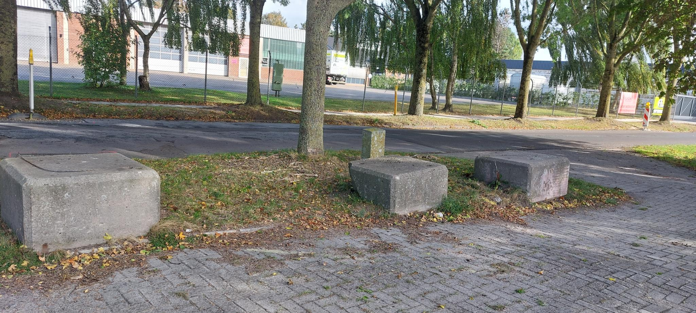

Hier stehen sie, die – die das sagenhafte Trio formen. Massiv wie Stein, kalt wie Stein, standhaft wie Stein. Denn mehr als Stein sind diese drei Helden sowieso nicht. Man könnte sich stundenlang über ihren Sinn & Zweck unterhalten. Mal können sie als Ablagefläche dienen, mal als stützende Sitzfläche, wenn auch etwas kalt & hart – und mal dienen sie einfach als Fels (Stein..) in der Brandung, hier ggf. als Wachposten für Unbefugte. Drüber zu urteilen oder gar zu schätzen, wie alt dieses kolossale Trio doch sein könnte, mag man sich lieber gar nicht erst annehmen. Sie waren vor uns hier, sie bleiben auch nach uns hier. Die drei Brüder im Gesteine.
? Zurück zur Navigation